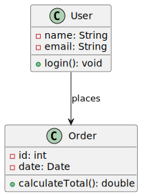
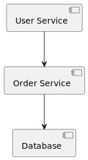
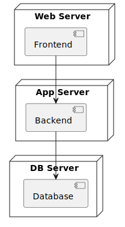
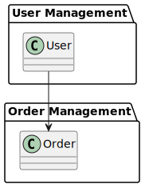
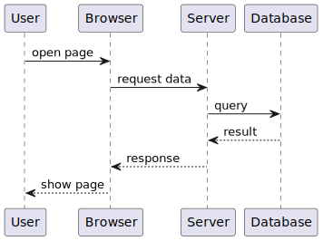
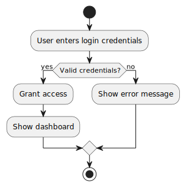
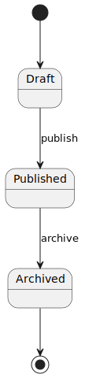
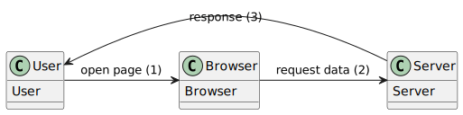
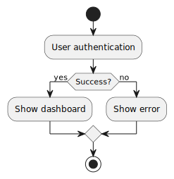

📝 Диаграммы в документации и проектировании
1. Введение. Подход Diagrams as a Code
Диаграммы — это визуальное представление структуры, процессов и взаимодействий в системе. Они помогают:
Упростить восприятие сложной информации.
Улучшить коммуникацию между членами команды.
Документировать архитектуру и облегчить внедрение новых разработчиков.
Выявлять и устранять архитектурные проблемы на ранних этапах.
Diagrams as a Code — это подход, при котором диаграммы описываются с помощью текстового кода, а не рисуются вручную в графических редакторах. Диаграммы генерируются автоматически из текстового описания с помощью специальных инструментов, таких как PlantUML, Mermaid, Graphviz и др.
Преимущества:
Версионирование — текстовые файлы с описанием диаграмм легко хранить в системах контроля версий (например, Git), отслеживать изменения и работать в команде.
Автоматизация — диаграммы можно генерировать в рамках CI/CD, обновлять при изменении кода или архитектуры.
Простота редактирования — изменение текста проще, чем редактирование графического файла.
Повторное использование — шаблоны и компоненты можно переиспользовать в разных диаграммах.
Интеграция с документацией — диаграммы можно встраивать в Markdown, Confluence, GitLab и другие системы.
Недостатки:
Кривая обучения — требует знания синтаксиса инструментов (например, PlantUML или Mermaid).
Ограниченная гибкость — не все сложные визуальные эффекты или стили можно реализовать.
Зависимость от инструментов — нужно обеспечивать доступ к инструментам генерации диаграмм в вашем окружении.
В проекте используются различные инструменты для визуализации архитектуры и процессов. Ниже приведена таблица с описанием, сгруппированная по типу:
Архитектурный подход |
C4 Model |
Подход к моделированию архитектуры ПО на четырёх уровнях: контекст, контейнеры, компоненты и код. Помогает структурированно описывать архитектуру систем. |
Язык моделирования |
UML |
Unified Modeling Language — стандартный язык для визуализации, проектирования и документирования архитектуры программных систем. Включает в себя множество типов диаграмм: классов, последовательностей, деятельности и др. |
Язык описания диаграмм |
PlantUML |
Инструмент, позволяющий создавать диаграммы из текстового описания. Поддерживает UML, C4, ER-диаграммы, Gantt и другие. Упрощает автоматизацию и версионирование диаграмм. |
Расширение |
C4-PlantUML |
Расширение PlantUML для поддержки синтаксиса C4 Model. Позволяет быстро создавать диаграммы по модели C4 в текстовом формате. |
Сервис визуализации |
Kroki |
Сервис для рендеринга диаграмм, поддерживает PlantUML, Mermaid и другие форматы. Может использоваться как самостоятельный сервер или интегрироваться с GitLab, Confluence и Markdown. |
Инструмент моделирования |
Graphviz |
Графическая библиотека для автоматического построения диаграмм. Часто используется в автоматических генераторах архитектурных схем. |
2. UML (Unified Modeling Language)
UML (Unified Modeling Language) — это унифицированный язык моделирования, разработанный для описания, визуализации, проектирования и документирования программных систем. Он был создан в 1990-х годах и стал стандартом де-факто в индустрии разработки ПО.
Цели UML:
Моделирование архитектуры — позволяет описать структуру и поведение системы до её реализации.
Документирование — фиксирует архитектурные решения и делает их доступными для команды.
Коммуникация — обеспечивает единый язык общения между разработчиками, архитекторами, тестировщиками и другими участниками проекта.
Проектирование — помогает планировать и разрабатывать системы, учитывая связи между компонентами и их поведение.
Анализ и проверка — позволяет выявлять потенциальные проблемы на этапе проектирования.
Концепции UML:
Диаграммы — графические представления различных аспектов системы.
Элементы — объекты, классы, акторы, компоненты и т.д.
Отношения — связи между элементами (наследование, ассоциации, зависимости и др.).
Нотации — стандартные обозначения, используемые в диаграммах.
Типы UML-диаграмм
UML включает в себя множество типов диаграмм, которые делятся на структурные и поведенческие.
Структурные диаграммы
Структурные диаграммы показывают статические аспекты системы, её компоненты, классы, объекты и их отношения.
Диаграмма классов (Class Diagram)
Описывает структуру системы, показывая классы, их атрибуты, методы и связи.
Используется для проектирования архитектуры объектно-ориентированного ПО.
Диаграмма объектов (Object Diagram)
Показывает экземпляры классов и их связи в определённый момент времени.
Полезна для иллюстрации примеров работы системы.Диаграмма компонентов (Component Diagram)
Отображает компоненты системы и зависимости между ними.
Помогает понять, как организована архитектура на уровне модулей и библиотек.
Диаграмма развёртывания (Deployment Diagram)
Показывает, как компоненты системы размещены на физических узлах (серверах, компьютерах).
Используется при проектировании инфраструктуры.
Диаграмма пакетов (Package Diagram)
Представляет структуру системы в виде иерархии пакетов.
Полезна при логическом разделении кода.
Диаграмма профилей (Profile Diagram)
Используется для расширения UML с помощью пользовательских стереотипов.
Применяется при создании доменных языков моделирования.
Поведенческие диаграммы
Поведенческие диаграммы описывают динамические аспекты системы, такие как взаимодействие между объектами, изменения состояний, потоки данных и т.д.
Диаграмма последовательности (Sequence Diagram)
Показывает, как объекты взаимодействуют друг с другом в определённой временной последовательности.
Используется для моделирования сценариев использования.
Диаграмма деятельности (Activity Diagram)
Описывает поток выполнения процесса, включая параллельные и условные ветвления.
Аналогична блок-схеме, но более мощная и гибкая.
Диаграмма состояний (State Machine Diagram / State Diagram)
Показывает, как объект изменяет своё состояние в ответ на события.
Полезна при моделировании жизненного цикла объекта или системы.
Диаграмма вариантов использования (Use Case Diagram)
Описывает, как пользователи (акторы) взаимодействуют с системой.
Помогает определить функциональные требования к системе.Диаграмма коммуникации (Communication Diagram)
Показывает взаимодействие между объектами с акцентом на связи.
Аналог диаграммы последовательности, но с другим акцентом.
Диаграмма взаимодействия (Interaction Overview Diagram)
Комбинирует элементы диаграмм деятельности и последовательности.
Подходит для описания сложных сценариев взаимодействия.
Недостатки UML
Чрезмерная сложность языка — UML был задуман как универсальный язык, и создатели стремились объединить все возможные диаграммы в единую метамодель. Это привело к избыточной сложности, где простые задачи требуют изучения множества нотаций и правил.
Недостаточная поддержка в инструментах — не все инструменты моделирования поддерживают все нотации UML в полном объёме. Это может ограничивать возможности при создании сложных диаграмм.
Ограниченная применимость вне ПО — UML был разработан в первую очередь для моделирования программных систем. Его использование в других областях (например, бизнес-процессы, проектирование БД) может быть не всегда удобным и логичным.
Сложности с версионированием и актуальностью — диаграммы в виде графических файлов сложно хранить в системах контроля версий, а также поддерживать в актуальном состоянии при изменении архитектуры.
Снижение ясности при избыточном использовании — если использовать слишком много диаграмм или нотаций, это может запутать, а не прояснить структуру и поведение системы.
3. PlantUML
PlantUML — это мощный и удобный инструмент, который позволяет создавать широкий спектр диаграмм с помощью простого текстового синтаксиса. Он идеально подходит для тех, кто хочет использовать подход “Diagrams as a Code” — создавать диаграммы из текста, а не вручную рисовать их в графических редакторах.
Преимущества:
Поддержка множества типов диаграмм — PlantUML поддерживает не только все основные UML-диаграммы (классы, последовательности, состояния, компоненты и т.д.), но и множество других: диаграммы Ганта, ER-модели, MindMap, сетевые схемы, JSON/YAML-структуры и даже математические выражения.
Интеграция с популярными системами — PlantUML работает с GitLab, GitHub, Confluence, Notion, Obsidian, IDE (например, IntelliJ, VS Code), Markdown-редакторами и другими инструментами, что делает его гибким и удобным в использовании.
Поддержка визуальных возможностей — PlantUML позволяет добавлять гиперссылки, иконки, форматирование, смайлики, математические выражения и многое другое, что делает диаграммы не только информативными, но и визуально привлекательными.
Поддержка разных форматов вывода — диаграммы можно экспортировать в PNG, SVG, LaTeX и даже в ASCII-арте, что делает их подходящими для любых задач: от презентаций до технической документации.
Независимость от инструментов — PlantUML не требует сложных графических редакторов, работает на основе текста и может быть запущен локально, на сервере или в облаке (например, через Kroki).
Движки — PlantUML поддерживает разные движки (Graphviz, Smetana, VizJs, ELK), что позволяет настраивать внешний вид диаграмм под конкретные задачи и предпочтения.
Открытый исходный код — PlantUML бесплатен и с открытым исходным кодом, что делает его доступным для любого проекта.
Синтаксис PlantUML
PlantUML использует простой и интуитивно понятный текстовый синтаксис, который позволяет описывать диаграммы с помощью понятных команд. Ниже приведены основные элементы синтаксиса, сгруппированные по функциональности.
Базовые элементы
#TODO: добавить сюда, что нужно использовать name после startuml
|
Обрамляет начало и конец диаграммы |
|
’ |
Однострочный комментарий |
|
/’ … „/ |
Многострочный комментарий |
|
Определения и импорт
!define |
Определяет псевдонимы или макросы |
|
!include |
Подключает внешние файлы |
|
!includeurl |
Подключает файлы по URL |
|
Иконки и изображения
!sprite |
Определяет пользовательские иконки |
|
!tag |
Определяет пользовательские теги |
|
Управление стилями и темами
skinparam |
Настройка внешнего вида диаграммы |
|
!theme |
Подключение предустановленных тем |
|
!startsub … !endsub |
Группировка элементов диаграммы |
|
Директивы и настройки
!pragma |
Глобальные параметры (движок, опции) |
|
title |
Добавляет заголовок диаграммы |
|
caption |
Добавляет подпись под диаграммой |
|
Заметки и аннотации
note |
Добавляет заметку |
|
note right of |
Заметка справа от элемента |
|
note left of |
Заметка слева от элемента |
|
Условия и циклы (в Activity Diagrams)
if … then … else … endif |
Условный блок |
|
while … endwhile |
Цикл |
|
repeat … until |
Цикл с постусловием |
|
Ссылки и гиперссылки
[[url]] |
Добавляет гиперссылку к элементу |
|
link |
Ссылка к связи между элементами |
|
4. C4 Model
C4 PlantUML
5. Другие типы диаграмм в PlantUML
ER-диаграммы (моделирование БД)
Gantt-диаграммы
Mind maps
Timeline
Примеры использования в проекте.
6. Kroki
Что такое Kroki: сервис для рендеринга PlantUML, Mermaid и др.
Возможности:
Поддержка нескольких языков диаграмм
REST API
Интеграция с Markdown, Confluence, GitLab и т.д.
Как использовать Kroki в проекте.
7. Mermaid (как альтернатива PlantUML)
Обзор Mermaid: синтаксис, возможности.
Сравнение с PlantUML.
Где используется (GitHub, Notion, Obsidian и т.д.).
8. Рекомендации по использованию диаграмм
Какие диаграммы использовать в каких случаях.
Стандартизация диаграмм в проекте.
Хранение и версионирование диаграмм (например, в Git).
Обновление диаграмм при изменении архитектуры.
9. Примеры диаграмм из проекта
Примеры C4-диаграмм, UML-диаграмм и т.д.
Объяснение структуры и логики.
Ссылки на исходники (если есть).
10. Заключение
Значение диаграмм для проекта.
Как поддерживать диаграммы актуальными.
Следующие шаги: автоматизация, CI/CD, интеграция с документацией.